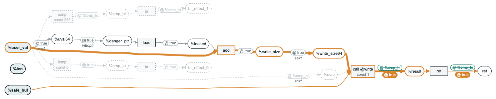
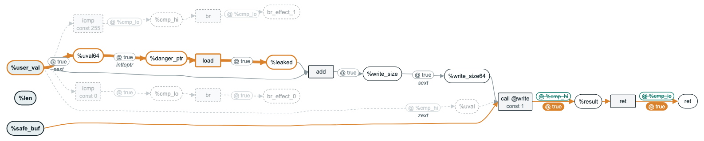

SURE '26 · co-located with ACM CCS 2026 · The Hague
Detecting Authority-Exposing Patches with Differential Guarded Flow Paths
Bugs are a lack of program-level sanitization. If every value flow carries the check that guards it, a patch that removes a check becomes a visible difference between two graphs, with a witness path.
Includes the checker appendix (DC-01–DC-10, OW-01–OW-07).
Software changes constantly, and patches keep introducing vulnerabilities. Many of them have one shape: a patch removes or weakens a check, and an attacker gains authority that was previously out of reach. The question an analyst asks of such a diff is not “is there a bug?” but “what can I do now that I could not before, and along which path?” Bug detectors match shapes in one version; taint trackers report that data reaches a sensitive operation but keep the check beside the query, not in the program. Neither can name the check a patch removed.
We introduce Guarded Flow Paths (GFP), in which every value flow carries the branch conditions under which it happens, so a check is a label on the path from an input to the operation that uses it. A checker names a source, a sensitive operation, and the condition under which that operation becomes a violation: the same integer may select an address, a write length, or a record, and the operand it reaches says which. One reachability query answers every checker. Differential authority analysis runs that query on both sides of a patch and reports the authority gained or lost: which sensitive operations an input can now reach, and which guard protected each path before. Our intra-procedural prototype, AuthDiff, lifts LLVM IR into GFP; on a worked example it reports nine newly unconditioned source/endpoint pairs with thirteen witness paths, and seventeen written checkers span CWE and OWASP classes on synthetic examples and one OpenSSL excerpt.

diff output on the
document-fetch fixture (a synthetic minimal LLVM-IR model). Before the patch, the fetch and the return were
guarded by @ %is_ok (struck through); after it they hold @ true. The orange edges
are the newly unguarded witness path from %doc_id; the grey chain is the deleted access check.


@ %cmp_hi →
@ true) and (2) the integer now used as an address and loaded from. Thick orange is the witness path for each.
9 new unguarded pairs, 13 witness paths; graph paths, not nine bugs.
The viewer is one self-contained HTML file that works offline. It draws only parsed prototype output for the talk's fixtures, in three views:
| 1 2 3 | switch view: graph · spec · differential |
| b / a | graph view: before / after the patch |
| f | next example (heartbeat model → document fetch → integer dispatch) |
| w | differential view: highlight the next witness path (or click a witness line) |
Open the viewer, then use the keys. Laid out for a desktop-size screen.
Terminal replay: the live demo, replayed in the browser from recorded runs (Enter steps, ← back, 1–4 picks a case).
One command compares the two sides of a patch:
duc-proto diff before.ll after.ll
Recorded output of case 1 (document fetch: an ownership check is deleted), verbatim:
1 · Document fetch: an ownership check is deleted
fixture OW-03 · paper §2
- if (!acl_check(user_id, doc_id)) {
- return NULL;
- }
return db_fetch_doc(doc_id);
Before the patch: what governs the fetch?
$ duc-proto normalize broken_access_control_safe.ll | grep 'db_fetch_doc'
def %doc <- call(@db_fetch_doc, %doc_id) @ %is_ok
What can an input reach now, unguarded, that it couldn't before?
$ duc-proto diff broken_access_control_safe.ll broken_access_control.ll
@get_document:
NEW capability paths (introduced in after):
+ %doc_id -> %doc
%doc_id --[true]--> %doc
+ %doc_id -> ret
%doc_id --[true]--> %doc --[true]--> ret
All four recorded cases: 1 document fetch ·
2 heartbeat · 3 ping endpoint ·
4 integer dispatch. The live script, run-demo.sh,
needs the DUC v2 prototype binary (duc-proto) and its test fixtures, located by DUC_ROOT;
without them, read the recorded outputs.
Scope. The prototype is intra-procedural. The examples are mostly synthetic minimal LLVM-IR models patterned on real vulnerabilities, plus one real OpenSSL function. The checker specifications are written; their automatic evaluation is planned.
@inproceedings{dautenhahn2026changes,
author = {Dautenhahn, Nathan and Bratus, Sergey},
title = {Changes in the Guard: Detecting Authority-Exposing Patches
with Differential Guarded Flow Paths},
booktitle = {2nd Workshop on Software Understanding and Reverse
Engineering (SURE '26)},
year = {2026},
month = nov,
address = {The Hague, Netherlands},
publisher = {ACM},
isbn = {979-8-4007-3019-1},
doi = {10.1145/3847158.3847387},
url = {https://doi.org/10.1145/3847158.3847387}
}